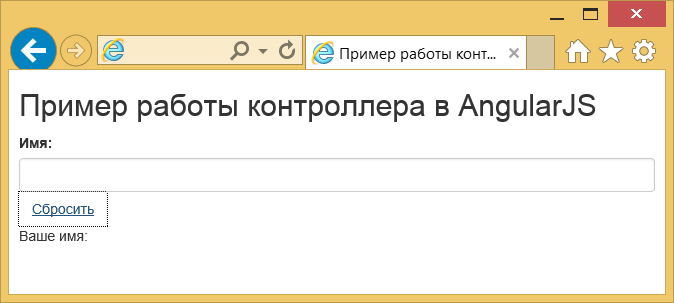

Контроллеры в AngularJS
В примере ниже мы увидим, как работают контроллеры в Angular.
Чтобы сделать это, я выбрал простую форму, в которой у пользователя запрашивается его имя. После чего обновляется информационное сообщение (то есть «Ваше имя...»). Я также включил кнопку сброса для демонстрационных целей.
Обязательные предпосылки
Перед тем как перейти к технической части данного примера, позвольте представить вам элемент $scope.
Что такое $scope
AngularJS поддерживает шаблон MVC, в котором объект $scope связан с моделью приложения. На самом деле, это клей между представлением и контроллером. Кроме того, он хранит данные модели, которые нужно переслать в представление и применяется в качестве двусторонней привязки данных Angular чтобы связать данные модели с представлением.
Его обязанность заключается в инициализации данных, которые необходимо отобразить в представлении. $scope располагается в иерархической структуре, которая имитирует структуру DOM приложения.
Что такое контроллеры?
Как правило, контроллер в Angular является функцией-конструктором JavaScript, которая дополняет объект $scope. Она может быть прикреплена к DOM через директиву ng-controller, где Angular создаёт новый объект контроллера, используя специальную функцию контроллера. Применяя контроллер мы можем представить новую дочернюю область видимости в качестве внедряемого параметра функции контроллера. Этот параметр доступен через $scope.
Как инициализировать состояние объекта $scope
При создании приложения мы должны настроить начальное состояние для $scope. Это может быть сделано путём присоединения свойства к объекту $scope. Эти свойства содержат представление (модель, которая будет представлена через представление). Все свойства $scope будут доступны в шаблоне в тот момент в DOM, когда контроллер зарегистрирован.
Небольшой пример
Мы создали HelloController, к которому присоединено свойство helloMessage, содержащее строку «Привет, мир!» в $scope:
var myApp = angular.module('myApp',[]);
myApp.controller('HelloController', ['$scope', function($scope) {
$scope.helloMessage= 'Привет, мир!';
}]);Что фактически сделали, так это создали модуль Angular (myApp) для нашего приложения. Затем мы добавили функцию-конструктор контроллера в модуль, используя метод .controller(). Это держит функцию контроллера за пределами глобальной области видимости.
Далее мы присоединяем наш контроллер к DOM через директиву ng-controller. Свойство helloMessage теперь можно присоединить к шаблону:
< div ng-controller="HelloController" >
{{ helloMessage }}
</div >Случаи использования контроллера
Как правило, мы обычно применяем контроллеры для установки начального состояния объекта $scope или для добавления поведения к объекту $scope.
Случаи, когда мы не можем использовать контроллеры.
- Манипулирование DOM (контроллеры должны содержать только бизнес-логику).
- Формат ввода; используйте взамен элементы форм Angular.
- Выходной фильтр; используйте взамен фильтры Angular.
- Делиться кодом или состоянием между контроллерами; используйте взамен сервисы Angular.
- Управление жизненным циклом других компонентов (т. е. для создания экземпляров сервисов).
Наш пример
Как я упоминал ранее, пример содержит текстовое поле для имени пользователя с кнопкой сброса и обновляемым сообщением, связанным с логикой контроллера.
index.html
<!DOCTYPE html>
<html>
<head>
<meta charset="UTF-8">
<title>Пример работы контроллера в AngularJS</title>
<link rel="stylesheet" href="https://maxcdn.bootstrapcdn.com/bootstrap/3.3.5/css/bootstrap.min.css">
<script src="http://ajax.googleapis.com/ajax/libs/angularjs/1.2.26/angular.min.js"></script>
<script src="script.js"></script>
<link rel="stylesheet" href="style.css">
</head>
<body ng-app="myApp">
<h2>Пример работы контроллера в AngularJS</h2>
<div ng-controller="UserController">
<form>
<label>Имя:</label>
<input type="text" class="form-control" name="username" ng-model="username">
<button class="btn btn-link" ng-click="reset()">Сбросить</button>
<p>Ваше имя: {{username}}</p>
</form>
</div>
</body>
</html>Как поясняет строка 8, функциональность нашего контроллера будет определена в файле script.js. В строке 11 мы объявляем наше приложение Angular по имени myApp. Строки 13-20 содержат важный <div>, который взаимодействует с UserController (это в сочетании с 8 строкой включённого скрипта означает, что логика нашего контроллера содержится в JavaScript-файле.
Что еще важно здесь, с точки зрения Angular, это атрибут ng-model текстового поля в строке 16. На самом деле это директива, которая связывает наше текстовое поле со свойством username с помощью UserController, который создаётся и раскрывается этой директивой.
Иными словами, значение текстового поля может быть изменено внутри контроллера путём доступа к свойству username из объекта $scope (т. е. $scope.username).
Что насчёт строки 17 и ng-click? Итак, с помощью директивы ng-click мы связываем элемент <div>, включая его детей c контекстом контроллера UserController. Директива ng-click будет вызывать функцию reset() нашего контроллера при нажатии кнопки Сбросить.
В строке 18 есть сообщение, о котором мы говорили ранее, где в двойных фигурных скобках ({{}}) выражение привязывается к элементу.
Достаточно сказано для реализации нашего представления. Давайте теперь перейдём к коду контроллера, а затем объясним необходимые детали.
script.js
var myApp = angular.module('myApp', []);
myApp.controller('UserController', ['$scope', function($scope) {
$scope.username = 'не известно';
$scope.reset = function() {
$scope.username = '';
};
}]);Сперва мы должны определить, что этот скрипт является модулем Angular, особенно тот, что задан в нашем index.html как имя приложения myApp. Затем мы определяем имя контроллера и инициализируем username со значением «не известно». Таким образом, когда приложение загружается в браузере, текстовое поле будет заранее содержать значение, но при изменении его пользователем ng-model взаимодействует с контроллером и обновляет значение имени пользователя (через переменную в фигурных скобках в представлении).
Очевидно, что функция reset() применяется для очистки содержимого текстового поля.
Демонстрация
Давайте теперь покажем быстро демонстрацию. Вот начальный вид:
Рис. 4.1. Исходное состояние приложения
Если мы нажали на кнопку Очистить, наше текстовое поле пустеет:

Рис. 4.2. Кнопка сброса
Наконец, вот обновлённое сообщение, которое, в сочетании с вводом имени, приведёт к динамическому виду в нашем приложении:
Рис. 4.3. Ввод имени
Скачать
Вы можете скачать полный исходный код этого примера здесь: angularjs_controller.zip.

Все материалы сайта доступны по лицензии Creative Commons «Attribution-NonCommercial» («Атрибуция — Некоммерческое использование») 4.0 Всемирная, если не указано иное.